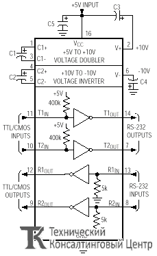
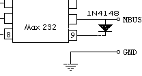
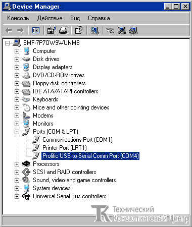
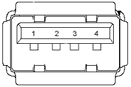
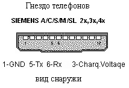
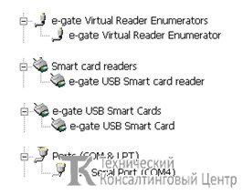

Принципиальное устройство мобильного телефона
 Устройство мобильного телефона.
Устройство мобильного телефона.
Процессор и память
Мобильный телефон, как и любой компьютер, работает по программе,
записанной в микросхемах памяти. Разные производители мобильных
телефонов используют процессоры либо собственной разработки, либо
сторонних производителей. Если микропроцессор собственный, то, скорее
всего, он включает в себя функциональные узлы, которые традиционно не
принято отождествлять с микропроцессором. Это может быть обработка
звука, управление звонком и т.п.
Некоторые телефоны содержат (к
примеру, SonyEricsson) содержат 2 процессора - основной Main CPU
(микросхема AVR) и Modem CPU (микросхема ARM). Main CPU служит для
большинства функций телефона, включая языковые пакеты. Modem CPU служит
для инфракрасной связи (IRDA), Bluetooth и для передачи данных и факсов.
Очень важным элементом в микропроцессорной системе является
память. Рассмотрим этот вопрос подробнее, так как в классификации
микросхем памяти многие путаются.
Микросхемы памяти по назначению условно можно разделить на следующие две большие группы.
1. ROM (Read Only Memory) - память, предназначенная в конкретной микропроцессорной системе только для чтения (русскоязычное название - ПЗУ - постоянное запоминающее устройство, хотя это название не совсем корректное). Используется для хранения программ.
Эти микросхемы в свою очередь подразделяются на:
- энергозависимые и энергонезависимые - по степени зависимости от электропитания;
- однократно программируемые (PROM - Programmable ROM) и многократно
программируемые (EPROM - Erasable Programmable ROM или Electrically
Programmable ROM - стираемые программируемые ROM или электрически
программируемые ROM) - по количеству циклов записи;
- с
ультрафиолетовым, рентгеновским или электрическим (EEPROM -
Electronically Erasable PROM и Flash) стиранием, по методу стирания
перед записью.
2. RAM (Random Access Memory) - память с
произвольным доступом, в конкретной микропроцессорной системе
используемая как оперативная. Подразделяется на:
- статическую
(SRAM) и динамическую (DRAM) в зависимости от метода хранения
информации. Динамическая использует для хранения информации
электрическую емкость, энергию которой нужно периодически пополнять -
отсюда и название;
- энергозависимую и энергонезависимую - по степени зависимости от электропитания.
В мобильных телефонах применяется Флэш (Flash), EEPROM (в последнее время уже не применяют) и DRAM. Главная отличительная особенность EEPROM и Flash - возможность перепрограммирования при подключении к стандартной системной шине микропроцессорного устройства. Рассмотрим EEPROM и Flash подробнее.
EEPROM - позволяет производить стирание отдельной ячейки при помощи электрического тока. Это относительно длительный процесс. Однако стирание каждой ячейки выполняется автоматически при записи в нее новой информации, т.е. можно изменить данные в любой ячейке, не затрагивая остальные. EEPROM - энергонезависимая память. А недостатком является высокая стоимость.
Флэш-память - особый вид энергонезависимой перезаписываемой полупроводниковой памяти.
Является аналогом жесткого диска, т.к. считывание и запись осуществляются последовательно бит за битом.
Переводы слова flash: короткий кадр (фильма), вспышка, пронестись,
мигание, мелькание, отжиг (стекла). Флэш-память получила свое название
благодаря тому, как производится стирание и запись данного вида памяти.
Название было дано компанией Toshiba во время разработки первых
микросхем флэш-памяти (в начале 1980-х) как характеристика скорости
стирания микросхемы флэш-памяти in a flash - в мгновение ока.
Флэш-память исторически происходит от ROM памяти и функционирует подобно
RAM. Данные флэш хранит в ячейках памяти, похожих на ячейки в DRAM. В
отличие от DRAM, при отключении питания данные из флэш-памяти не
пропадают.
Замены памяти SRAM и DRAM флэш-памятью не происходит
из-за двух особенностей: флэш работает существенно медленнее и имеет
ограничение по количеству циклов перезаписи (от 10 000 до 1 000 000 для
разных типов).
Основное преимущество флэш-памяти перед жесткими
дисками и носителями CD-ROM состоит в том, что флэш-память потребляет
значительно (примерно в 10-20 и более раз) меньше энергии во время
работы. В устройствах CD-ROM, жестких дисках, кассетах и других
механических носителях информации большая часть энергии уходит на
приведение в движение механики этих устройств. Кроме того, флэш-память
компактнее большинства других механических носителей.
Итак,
благодаря низкому энергопотреблению, компактности, долговечности и
относительно высокому быстродействию флэш-память идеально подходит для
использования в качестве накопителя в мобильных телефонах.
Основное
отличие флэш-памяти от EEPROM заключается в том, что стирание
содержимого ячеек выполняется либо для всей микросхемы, либо для
определенного блока (кластера, кадра или страницы). Стирать можно как
блок, так и содержимое всей микросхемы сразу. Таким образом, для того,
чтобы изменить один байт, сначала в буфер считывается весь блок, где
содержится подлежащий изменению байт, стирается содержимое блока,
изменяется значение байта в буфере, после чего производится запись
измененного в буфере блока. Такая схема существенно снижает скорость
записи небольших объемов данных в произвольные области памяти, однако
значительно увеличивает быстродействие при последовательной записи
данных большими порциями. Информация, записанная на флэш-память, может
храниться длительное время (от 20 до 100 лет) и способна выдерживать
значительные механические нагрузки (в 5-10 раз превышающие предельно
допустимые для обычных жестких дисков).
Устройство памяти.
Процессоры мобильных телефонов работают с двумя видами памяти.
1. ROM (Read
Only Memory) - память, предназначенная только для чтения в процессе
работы телефона с возможностью записи в нее при перепрограммировании.
Небольшая область ROM, предназначенная для программ начальной загрузки
(аналог BIOS ПК), находится в процессоре. Основная область ROM
использует микросхему Flash (флэш)-памяти. С этой микросхемой и производится основной обмен при перепрограммировании.
Эта память энергонезависимая - при отключении питания информация
сохраняется. Применяются также дополнительные области на съемных
флэш-картах.
2. RAM (Random Access Memory) -
память с произвольным доступом, используемая как оперативная, т.е. для
временного хранения данных. Эта память энергозависимая – при отключении
питания информация исчезает. В нее загружается и затем работает
операционная система. Иногда является встроенной в процессор. Во многих
телефонах для нее используется отдельная микросхема.
Весь объем памяти, с которой может работать процессор телефона, заполняется данными, которые имеют свое назначение и определенное местоположение. Рассмотрим карту распределения памяти телефона
{kind=link}
Как уже упоминалось, вся область памяти состоит из двух частей – ROM и RAM. Рассмотрим их по порядку.
ROM
Процессоры всех телефонов имеют в своем составе небольшую область ROM, в которой располагаются:
- программа начальной загрузки, начинающая работать при включении телефона;
- программа, управляющая начальным процессом обмена данными с компьютером.
Вся остальная, гораздо более значительная часть ROM, располагается в
микросхеме Flash-памяти, а также на съемных картах. Flash-памяти, в свою
очередь, условно делится на следующие основные области:
- BOOT CORE – загрузчик операционной системы.
- EEPROM - эта область содержит настройки телефона (заводской номер
телефона (IMEI), коды блокировок сети, пользователя, калибровки
радиотракта, игры, установки для дисплея и многое другое...) и появилась
потому, что новые телефоны уже не имеют отдельной микросхемы EEPROM.
- LANG, PPM – блок данных, в котором хранится языковой пакет. Так как
существует большое количество языков и шрифтов во всем мире, в одном
PPM-блоке может храниться от 1 до 20 языков. Смена языкового пакета это
основная причина смены PPM. Перезапись PPM-блока такой же версией,
производится в случае повреждения данных.
- MCU – основная
программа (операционная система) со всеми, необходимыми для работы
телефона, функциями. MCU от одной модели нельзя использовать для другой.
Замена MCU делается для устранения заводских недостатков или добавления
новых функций, а также в случае повреждения данных во флэш-памяти
(программный ремонт).
- OTP – единожды программируемая область
памяти, в которой содержатся "отпечатки пальцев" телефона - информация,
которая присуща только данному телефону без права её изменения.
-
CONTENT - картинки, мелодии, JAVA-приложения, звонки, SMS-сообщения,
адресная книга и др. Для этой области может использоваться съемная карта
(MMC или FLEX).
- FS – файловая система, в которой располагается CONTENT.
RAM
ROM (Flash-память) является аналогом жесткого диска, который хранит данные операционной системы. Однако сама операционная система работает из RAM (оперативной памяти), куда она загружается после включения питания телефона. RAM содержится либо в отдельной микросхеме, либо встраивается в процессор.
Возможны несколько способов подключения мобильного телефона к компьютеру:
{kind=link}
I. Подключение телефон-компьютер (А)
Подобное подключение осуществляется с помощью Data-кабеля, который соединяет информационный выход телефона с портом компьютера.
Подключение к компьютеру открывает следующие возможности:
1. Возможно сохранить телефонную книгу на диске.
2. Возможно пополнять, удалять, изменять телефонную книгу на компьютере .
3. Возможно записать в телефон различный контент (мелодии, картинки, и т.п.).
4. Возможно отправлять и принимать SMS-сообщения (короткие текстовые) с клавиатуры компьютера, используя телефон как беспроводной модем (GSM модем) - нужно учитывать, что за такие SMS тоже надо платить.
Кабели бывают 4х видов, COM, USB->COM, LPT,USB :
COM обеспечивают согласование электрического интерфейса мобильного телефона с интерфейсом RS 232.
RS-232 - интерфейс передачи информации между двумя устройствами на расстоянии до 20 м. Информация передается по проводам с уровнями сигналов, отличающимися от стандартных 5В, для обеспечения большей устойчивости к помехам. Асинхронная передача данных осуществляется с установленной скоростью при синхронизации уровнем сигнала стартового импульса.
В RS-232 используются два уровня сигналов: логические 1 и 0. Логическую 1 иногда обозначают MARK, логический 0 - SPACE . Логической 1 соответствуют отрицательные уровни напряжения (-3..-10), а логическому 0 – положительные (+3..+10).

Схема микросхемы MAX-232 преобразователь интерфейса.
В этой схеме используется двухпроводный двунаправленный последовательный интерфейс (универсальный, FBus) – использует два провода для передачи информации в двух направлениях (Tx – передача - Transmit, Rx – прием - Receive) и GND – земля (см ниже рисунок). Питание + 5В удобнее всего взять непосредственно из компьютера (например, из разъема USB). Сигналы ignition/autoignition подаются на вход напряжения зарядки телефона. Светодиоды служат для индикации обмена.
{kind=link}
Однопроводный двунаправленный последовательный интерфейс (MBUS, CBUS) – использует один провод для передачи информации в двух направлениях и GND – земля. Применяется в телефонах Nokia и Bosch для работы с EEPROM и для синхронизации с компьютером. Он получается если в предыдущей схеме Rx и Tx соединить по схеме на рисунке.

Работа USB ->COM кабелей выглядит чуть сложнее, сначала на компьютере создается виртуальный COM порт, а затем с этим портом происходит согласование электрического интерфейса телефона. Для решение этой задачи была разработана микроcхема PL 2303.
{kind=link}
2.1 Установка драйвера для USB дата-кабеля
Драйвер нужно устанавливать при отключенном USB-кабеле, то есть дата-кабель не должен быть подключен к компьютеру.
2.1.1
Инсталлируем драйвер для USB-кабеля.
Открываем папку с драйвером, вы увидите две папки: папку INF и папку SETUP. Открываем папку SETUP и видим файл PL-2303 Driver Installer запускаем его. Программа предлагает вам начать установку драйвера. Нажимаем кнопку Next, и начинается установка драйвера. После нажатия на кнопку Finish установка драйвера завершена.
2.1.2
Перегружаем компьютер. Подключаем кабель к USB-порту. Автоматически находятся и распознаются новые устройства. Система сообщает Вам об этом в правом нижнем углу панели задач.
2.1.3
Для настройки программы для работы с телефоном Вам обязательно понадобится информация о том, какой COM-порт эмулируют драйверы дата-кабеля.
Нажимаем по папке "Мой компьютер" правой кнопкой мыши и выбираем раздел "Свойства" -> вкладка "Оборудование" -> раздел "Диспетчер устройств" -> раздел "Порты (COM & LPT)"

Находим Prolific USB-to-Serial Comm Port (COM*), где * - виртуальный СОМ-порт, который будет использоваться при работе с кабелем.
Нажимаем мышкой на Prolific и правой кнопкой выбираем "Свойства" - вкладка "Параметры порта" - скорость устанавливаем на 115200.
2.1.4
Подключаем телефон к дата-кабелю.
2.1.5
Запускаем программу для работы с телефоном и выставляем используемый драйвером СОМ-порт, а так же скорость работы порта (зависит от модели аппарата, в большинстве случаев 115200 или 57600 бит/с).
Параллельный интерфейс LTP используется для увеличения скорости обмена для перепрограммирования телефонов Nokia, некоторых моделей SonyEricsson, Sagem. Для старых типов Nokia этот интерфейс получил название Nokia flasher, где помимо Rx, Tx и Gnd, используются сигналы MBUS и BTEMP. Используется микросхема 74HC14 (аналог 1564ТЛ2 - шесть триггеров Шмидта). Питание + 5В удобнее всего взять непосредственно из компьютера (например, из разъема USB).
{kind=link}
USB – интерфейс. Основная особенность стандарта - возможность пользователям работать в режиме Plug&Play с периферийными устройствами. Это означает возможность подключения устройства к работающему компьютеру, автоматическое распознавание его немедленно после подключения и последующей установки соответствующих драйверов. Питание маломощных устройств подается с самой шины. Скорость шины достаточна для подавляющего большинства периферийных устройств. USB – интерфейс работает с новыми моделями Motorola на платформе P2K. На его основе созданы специализированные программаторы, в том числе и эмулирующие работу обычного COM-порта. Цоколевка розетки разъема, устанавливаемой в компьютере, приведена на рисунке, а назначение контактов в таблице.

Таблица. Назначение контактов разъема USB.
|
Номер контакта |
Назначение |
Цвет провода |
|
1 |
V BUS |
Красный |
|
2 |
D - |
Белый |
|
3 |
D + |
Зеленый |
|
4 |
GND |
Черный |
|
Оплетка |
Экран |
Оплетка |
Большинство программ работают через универсальный интерфейс. Достаточно собрать приведённую выше схему, найти соответствующий разъём телефона, правильно коммутировать сигналы Rx, Tx, Gnd и +5В и соединить интерфейс с телефоном. Цоколевку (распиновку) разъемов многих телефонов можно найти по адресу http://pinouts.ru
Особенности программирования используя канал A
Этот раздел начинает ознакомление с методиками программирования мобильных телефонов. Начнем с телефонов производства Siemens х35, х45 серий и Nokia платформы DCT-3. Здесь и далее буква «x» обозначает серии данного модельного ряда: «c», «s», «m», «me», «sl». Вы сможете менять версии программного обеспечения в мобильном телефоне с целью русификации или даже восстановления (программного ремонта), а также снимать ограничения на уровне пользователя или оператора («разлочивать»).
Телефоны Siemens x35-x45
Для программирования потребуется двухпроводный двунаправленный (FBUS) интерфейс. Расположение и назначение контактов в разъеме телефона показано на рисунке. Разъем для кабеля «телефон – интерфейс» можно сделать, взяв 2 разъема от «зарядок». Из одного разъема необходимо аккуратно вынуть недостающие в первом контакты.

Для программирования потребуются: свободный COM-порт (RS – 232) компьютера, интерфейс и телефон с заряженным аккумулятором. Обмен компьютера и телефона начинается либо после кратковременного нажатия кнопки включения телефона (при этом телефон вырабатывает сигнал ignition – "зажигание"), либо по сигналу компьютера autoignition, который подается на вход напряжения зарядки телефона (Charge voltage). В общем случае подтверждение каких-либо операций в программе осуществляется кратковременным нажатием кнопки включения телефона. После соединения между собой компьютера, интерфейса и телефона приступаем к процессу программирования.
Структура программного обеспечения и источники его распространения.
Программное обеспечение, хранящееся в микросхеме Flash-памяти для
простоты понимания можно условно разделить на две большие области:
firmware и EEPROM.
Для работы с областью firmware телефонов Siemens
была создана специальная заводская утилита WinSwup, которая позволяет
полностью заменить как версию программного обеспечения, так и язык меню.
При этом новая версия размещается в «теле» WinSwup. Таким образом,
сколько версий программного обеспечения, столько и WinSwup-ов, коллекцию
которых можно найти на портале www.allsiemens.ru/flash
Кроме этого, есть возможность работать с пользовательской версией
WinSwup, распространяемой непосредственно с официальной страницы
производителя www.benqmobile.com
В компьютерном представлении WinSwup выглядит как исполняемый ехе-файл, название которого можно представить как Name_XX_YY_ZZ.exe, где:
Name – модель телефона, под который написана утилита (может и отсутствовать) XX – версия программного обеспечения YY – номер языкового пакета («04», «91» - говорит о наличии русского языка в меню) ZZ – номер системы интуитивного набора T9 текста ( «05» - наличие «русского Т9»)
В самом телефоне эту же информацию можно увидеть в специальном
сервисном меню, вызываемого путём нажатия комбинации клавиш: *#06# плюс
«левая клавиша выбора» (left softkey).
С помощью WinSwup нельзя
оперировать с областью памяти EEPROM. Если это необходимо, на свой страх
и риск можно использовать программу freia, с помощью которой можно
работать не только с EEPROM, но и со всей прошивкой в целом (fullflash).
Winswup
Работу начинаем с настройки программы Serial Config (рисунок 6), где следует указать номер COM-порта, к которому подключен интерфейс и Baud - скорость обмена (обычно 115200).
{kind=link}
Для запуска процесса программирования существует два варианта действий:
- Если телефон включен и подключен к кабелю - нажать кнопку START.
- Если телефон выключен и подключен к кабелю - поставить галочку для
Skip в позиции PreCheck для отключения самотестирования телефона и
нажать кнопку START.
Второй вариант нужен для случаев, когда ремонтируемый телефон не
включается из-за ошибок, которые могли произойти во время работы по
первому варианту. Следует помнить, что при отсутствия режима
autoignition, после нажатия кнопки START требуется кратковременно нажать
кнопку включения телефона.
В обоих случаях, после завершении процедуры, программа выдаст сообщение, что процесс прошёл успешно со 100% окончанием.
Freia
Настройку программы начинаем с клавиши Configuration functions главного меню – Main functions. Устанавливаем COM port of cable - номер COM-порта, к которому подключен интерфейс, скорость обмена - Speed of communication (обычно 115200). Затем необходимо указать тип загрузки - Boot type («normal») и при наличии autoignition в интерфейсе отметить галочкой DTR в меню COM port setup.
{kind=link}
С помощью Freia можно считать либо всю прошивку, либо выборочно участки памяти, записать произвольные области памяти, а также провести операцию по снятию кодировок как пользовательских, так и операторских («разлочить»).
Чтение прошивки осуществляется с помощью клавиши Read Flash главного меню – Main functions, с последующим выбором области памяти в меню Presets, которое находится в меню Flashing functions. Эта область в ходе чтения автоматически сохраняется в файл с расширением *.fls. Процесс запускается кнопкой ОК. Процедура отображается в окошке – Process information.
Выбрав область памяти firmware, мы можем сделать, а затем сохранить полную резервную копию всей прошивки телефона. Эту процедуру необходимо провести, прежде всего, для того, чтобы обеспечить возможность восстановления телефона в случае каких-либо неправильных действий. Копия может пригодиться и для восстановления других телефонов данной серии.
{kind=link}
Запись прошивки в микросхему Flash-памяти осуществляется кнопкой Write Flash главного меню – Main functions, открывающей меню выбора файла прошивки в формате *.fls, который мы хотим записать. Следует быть внимательным с подставляемыми файлами, а именно чтобы размер записываемого файла совпадал с размером той области памяти, в которую он помещается, иначе на программном уровне телефон будет повреждён.
{kind=link}
По окончании программирования необходимо обязательно восстановить заводской номер телефона (IMEI), хранящийся в EEPROM-области памяти телефона, так как вместе с чужой прошивкой мы записываем и чужой EEPROM, а, следовательно, и чужой IMEI. Восстановление осуществляется в следующем порядке (рисунок 10). Нажимаем кнопку Unlocking functions главного меню – Main functions. В открывшемся меню Unlocking functions отмечаем позицию Direct unlock, no map is saved и нажимаем кнопку Use Original IMEI. После этого подтверждаем процедуру кратковременным нажатием кнопки включения на телефоне (ignition). Эта операция приводит к снятию пользовательских и операторских кодировок.
{kind=link}
II. Подключение телефон-бокс-компьютер (B-C)
Установка бокса
Установка драйверов
1. Пожалуйста, делайте всё строго по шагам ничего не пропуская
2. Не подключайте бокс/ключ защиты к компъютеру до установки драйверов
Примечание: "x:" обозначает диск, куда был установлен Infinity-Box (например. "C:" или "D:")
W2K/XP/Vista
1. Запустите: x:\Program Files\InfinityBox\Drivers\Box\e-gate_W2k_XP_Vista\Setup_W2k_XP.exe or Setup_Vista.exe
2. Подключите бокс/ключ к USB порту компьютера, Вы увидите 3 новых устройства в системе:
1. e-gate Virtual Reader Enumerators -> e-gate Virtual Reader Enumerator
2. Smart card readers -> e-gate USB Smart card reader
3. e-gate USB Smart Cards -> e-gate USB Smart Card
3. При необходимости выберите драйвера для Unibox: x:\Program Files\Infinity Box\Drivers\Box\FTDI
W98/ME
1. Запустите: x:\Program Files\Infinity Box\Drivers\Box\VC6Redist\vcredist.exe
2. Перезагрузите компьютер
3. Запустите: x:\Program Files\Infinity Box\Drivers\Box\Smart Card Base Components\SCBase.exe
4. Перезагрузите компьютер
5. Запустите: x:\Program Files\Infinity Box\Drivers\Box\e-gate_W98_Me\Setup.exe
6. Перезагрузите компьютер
7. Подключите бокс/ключ к USB порту компьютера, Вы увидите 3 новых устройства в системе:
1. e-gate Virtual Reader Enumerators -> e-gate Virtual Reader Enumerator
2. Smart card readers -> e-gate USB Smart card reader
3. e-gate USB Smart Cards -> e-gate USB Smart Card
8. При необходимости выберите драйвера для Unibox: x:\Program Files\Infinity Box\Drivers\Box\FTDI
9. Перезагрузите компьютер
Проверка результатов установки
Откройте "Диспетчер устройств" и проверьте наличие следующих устройств в системе:

Примечание: номер COM порта может отличаться от указанного на рисунке. Запомните номер COM порта и выбирайте его при использовании программ Infinity-Box.
При подключении телефона к боксу установка дополнительных драйверов для телефона не требуется.
СЛОВАРЬ СЛЕНГА И ОФИЦИАЛЬНЫХ ТЕРМИНОВ
Терминал – мобильный телефон (далее просто телефон).
Прошивка (программа, содержимое памяти) – массив данных, предназначенных для управления компонентами системы в целях реализации определенного алгоритма.
Прошивка (процесс - прошить, переписать, профлешить) – программное обеспечение телефона.
Термин "прошивка телефона" означает процесс замены в сотовом телефоне программного обеспечения. Это может выполняться с несколькими целями - установка более нового программного обеспечения, устранение программных сбоев, взлом защиты телефона.
Прошивка телефона производится с помощью специального программного обеспечения и кабелей-переходников между телефоном и компьютером а так же боксов.
Программное обеспечение телефона – набор программ для полноценной работы телефона. Включает в себя операционную систему и набор так называемых прикладных программ, дающих телефону дополнительные возможности (игры, музыка, видео, интернет и пр.).
Операционная система (ОС) - комплекс программ, обеспечивающий выполнение других (в т.ч. прикладных) программ, ввод-вывод данных, управление данными, взаимодействие с оператором (пользователем) и т.п.
Программатор телефона – специальное устройство, с помощью которого производится запись информации из компьютера в память телефона.
Коммутация, синхронизация – связь и согласование работы телефона с компьютером в целях обмена данными.
Дата-кабель (кабель, шнурок) – жгут проводов, соединяющих особым образом телефон с компьютером для обмена данными. Схема соединения зависит от аппаратной реализации того или иного телефона и для разных телефонов принципиально разная.
Интерфейсный кабель - кабель служит для соединения телефона с компьютером. Интерфейсный кабель позволяет выходить в интернет через телефон, отправлять смс, загружать файлы.
Сервисный кабель – служит для соединения телефона с компьютером, имеет дополнительные возможности по программированию телефона.
Оболочка - операционной системы (от англ. shell — оболочка) — интерпретатор команд операционной системы (ОС), обеспечивающий интерфейс для взаимодействия пользователя с функциями системы.
Компаунд - это сырьевая смесь, пластиковые гранулы с разнообразными добавками, которые позволяют обеспечить такие качества, как морозостойкость, ударопрочность, негорючесть, деформации при нагреве и т. п. Компаундной смолой обрабатываются как правила CPU, Flash.
Разъём (коннектор) – электрический соединитель кабеля и устройства. К телефону с помощью разъемов подключаются компьютер, зарядка, наушники и пр.
Интерфейс – совокупность средств и правил для взаимодействия устройств и (или) программ. В простейшем случае это согласующий элемент между компьютером и телефоном (внешний разъем, дата-кабель, программатор, ИК-порт и т.п.).
RS232 (универсальный интерфейс) – аппаратно программный комплекс, являющийся стандартом и составной частью всех компьютеров, предназначенный для обмена информацией последовательным кодом между компьютером и самыми разнообразными внешними устройствами.
Игнишн (Ignition – "зажигание") – сигнал из телефона в компьютер после кратковременного нажатия кнопки включения на телефоне (при этом он продолжает находиться в выключенном состоянии) для запуска процесса перепрограммирования.
Бутлоадер (бут, лоадер, boot, loader, bootloader) – программа самозагрузки, посылаемая компьютером в телефон после получения сигнала "игнишн", размещается в оперативной памяти, чаще всего процессора, и после размещения получает права управлять процессом перепрограммирования (загрузки) памяти телефона.
Глюк, баг, колбасит – сбои или некорректная работа телефона. Происходят либо по вине пользователя либо из-за допущенных ошибок при разработке программного обеспечения на заводе-изготовителе. Могут появляться после некорректной смены программного обеспечения.
Контактная площадка – металлизированное покрытие на плате телефона для электрического соединения (не пайка) деталей телефона. Обычно имеют золотистое покрытие.
Языковой пакет (англ. Language Pack)- набор данных, являющихся частью программного обеспечения телефона, позволяющий использовать тот или иной язык. Содержит в себе язык интерфейса, словари Т9.
ЕЕprom (Electrically Erasable Programmable Read Only Memory) - содержит область памяти телефона, в которой лежат настройки телефона. То есть все, что меняет пользователь в настройках телефона, записывается именно здесь. Но не все настройки телефона можно поменять с самого телефона. Возможно, сохранить EEprom с телефона на компьютер и изменить некоторые его блоки, это позволит открыть некоторые скрытые пункты настроек. Опасность состоит в том, что там же лежат и настройки радиотракта, который откалиброван на заводе раз и навсегда под конкретный телефон (не модель даже, а именно под каждый аппарат). Для предохранения неприятностей, необходимо делать backup (резервное копирование) - иначе при ошибке постоянная нестабильная работа связи, эхо, слабый сигнал и частая потеря сети неизбежны.
Файловая система, (англ. file system) — регламент, определяющий способ организации, хранения и именования данных на носителях информации. Она определяет формат физического хранения информации, которую принято группировать в виде файлов. Конкретная файловая система определяет размер имени файла, максимальный возможный размер файла, набор атрибутов файла. Некоторые файловые системы предоставляют сервисные возможности, например, разграничение доступа или шифрование файлов.
Файловая система связывает носитель информации, с одной стороны, и API (набор методов (функций), который программист может использовать для доступа к функциональности программного компонента (программы, модуля, библиотеки) для доступа к файлам — с другой. Когда прикладная программа обращается к файлу, она не имеет никакого представления о том, каким образом расположена информация в конкретном файле, так же, как и на каком физическом типе носителя (блоке флеш-памяти) он записан. Всё, что знает программа — это имя файла, его размер и атрибуты. Эти данные она получает от драйвера файловой системы. Именно файловая система устанавливает, где и как будет записан файл на физическом носителе.
Тест Поинт – (TP) это контрольная точка, отвечающая за посылку бутлоадера в телефон при смене программного обеспечения аппарата. На телефонах Siemens 55-ой и 60-ой серии цепь этой контрольной точки (контакт T9 на процессоре) должна быть разомкнута при прошивке. Чаще всего ТП используется для прошивки телефонов Siemens, иногда для телефонов Motorola.Метод работы с ТП для каждого телефона индивидуален (обрезание дорожки, напайка элементов, замыкание на массу).
Донгл (Электронный ключ) (также аппаратный ключ, от англ. dongle) — аппаратное средство, предназначенное для защиты программного обеспечения (ПО) и данных от копирования, нелегального использования и несанкционированного распространения.
Электронный ключ - небольшое по размерам аппаратное устройство.
Основой данной технологии является специализированная микросхема ASIC, либо специализированный защищённый микроконтроллер, имеющие уникальные для каждого ключа алгоритмы работы. Донглы также имеют защищённую энергонезависимую память небольшого объёма, более сложные устройства могут иметь встроенный криптопроцессор (для аппаратной реализации шифрующих алгоритмов), часы реального времени. Аппаратные ключи могут иметь различные форм-факторы, но чаще всего они подключаются к компьютеру через USB-, LPT- или PCMCIA-интерфейсы.
IMEI - International Mobile Equipment Identifier - число, являющееся уникальным для каждого выпущенного мобильного телефона. Устанавливается на заводе при изготовлении, служит для идентификации устройства в GSM сети. Число IMEI обычно можно прочитать на специальной табличке, расположенной под аккумуляторной батареей, а также определить (у большинства аппаратов), введя на клавиатуре следующий код:
*#06#
Каждая фирма-производитель мобильных телефонов несет ответственность за то, что не существует двух мобильных телефонов с одинаковыми IMEI.
Код IMEI содержит 15 цифр и состоит из четырех частей:
IMEI = TAC + FAC + SNR + SP,
TAC (Type Approval Code) - шестизначный код выбранного типа телефона конкретной серии (первые 2 цифры - код страны фирмы - разработчика)
FAC (Final Assembly Code) - используемый фирмой-разработчиком двузначный код, по которому можно определить страну, где был изготовлен телефон (код страны финальной сборки)
SNR (Serial Number) - шестизначный серийный код, который присваивается конкретному мобильному телефону
SP (Spare) - одна цифра, в зависимости от решения производителя контрольное или резервное число (у старых моделей почти всегда 0).
Коды TAC и FAC могут совпадать у телефонов одного типа и одной партии, выпущенной на одном и том же предприятии. Код SNR всегда индивидуален для каждого мобильного телефона.
Контрольная сумма - некоторое значение, рассчитанное путём применения определенных операций над входными данными.
Контрольная сумма обычно используется для проверки правильности передачи данных по каналам связи или как гарантия происхождения тех или иных данных.
Сервисные коды – коды и комбинации клавиш, активирующие системные настройки. Например: *#06# - IMEI телефона.
Full Flash, (он же ФФ, Фулл) - это полное содержимое памяти телефона, включающее в себя все прочие области памяти телефона.
Бэкап - резервное копирование данных. Позволяет восстановить данные в случаи потеры данных с телефона.
Приложения:
|
№ |
Название, маркировка |
Место приобретения. |
Цена р. |
Назначение |
|
1 |
Микросхема MAX232 |
Магазин радиодеталей |
30-50 |
Преобразование интерфейса RS-232 |
|
2 |
Мкросхема PL2303 |
Магазин по продаже датакабелей |
150-300 |
Эмулятор COM порта |
|
3 |
Комплект оборудования Infinity PinFinder + Infinity Dongle + Unibox |
Интерент магазин GSMSERVICE |
8 500-9 000 |
Для программирования, русификации и разблокировки |
|
4 |
Мобильный телефон |
|
|
|